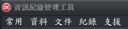

功能表
功能表說明：

資訊紀錄管理工具-功能表
- 常用：匯集常用的功能，日常的工作在這裏就可以全部完成。
- 文件交換：可提供文件設定檔引用及分享。只要匯入文件設定檔，就能讓系統支援該文件的資料輸入、列印及後續資料分析相關運用。
- 基本資料：使用者管理所轄的個人、公司的基本資料及金融帳號。
- 印表機：指定文件套的印表機、紙匣、列印方向及邊界設定等功能。
- 匯入套印：以匯入檔案的方式，進行資料套印工作。
- 資料：管理輸入、套印所需的相關資料。
- 基本資料：管理軟體使用者的基本資料及金融帳號，，以提升資料輸入的效率。
- 客戶管理：使用者以外的外部人員，例如收信人員。
- 內部人員：使用者以外的內部人員，在輸入時可以引用相關資料。
- 物品管理：強化輸入，例如辦公室文具、電腦軟硬體、物品品名項目、會計科目及任何需要帶出資料，都可在此建立資料後，以代號的方式進行輸入。
- 資料交換：用於取得外部資料，例如將「客戶資料」匯入本系統。
- 文件：將文件納入管理、設計文件套印內容、安排資料處理方式及設計資料輸入介面。
- 文件管理：文件納管時，建立文件領域(所屬機關、來源及類型等資訊。
- 列印內容設計：設定實際套印於文件上面的字串、圖案等內容，可設定大小、顏色、數量及位置。
- 資料配置：使用者輸(匯)入的資料，進行資料配置，例如將日期組成為年、月、日3個欄位，或同一文件有多個日期，輸入1次可多個欄位取用。
- 資料處理：使用者輸(匯)入的資料後。進行資料處理，例如將日期切割為年、月、日3個部份，或者將「1000」轉為「新臺幣壹仟元整」。
- 輸入介面設計：
- 主要功能：
- 增加欄位：主要用於查詢，以輸入代號(如銀行帳號、客戶編號)的方式同時取得多種資料。
- 輔助輸入：如自動帶入日期、帳號、提供關鍵字搜尋，保留輸入資料...等。
- 設定各式操作強化及輔助資料輸入，如限定輸入數字、強制轉換為大寫。
- 支援功能：
- 查詢設計：如輸入客戶代號或關鍵字的方式，取得客戶的相關資料。
- 顯示設計：設計已儲存的資料，要呈現那些欄位。
- 儲存設定：將指定的資料儲存，做為續處理(例如日計表、領款簽收單的資料..)
- 版面設計：當輸入項目少於20個項目時，採用系統預設的一欄式輸入方式即可，但如果表格輸入項目超過20個導致輸入不便，或者使用者想要自行設計輸入介面，均得由此功能進行輸入介面設計。
- 文件交換：可提供文件設定檔引用及分享。只要匯入文件設定檔，就能讓系統支援該文件的資料輸入、列印及後續資料分析相關運用。
- 紀綠：將套印後的資料保留，以利後續分析管理。
- 文件領用登錄：對於有編號的文件，可先將票號登錄，系統於套印時，自動將套印資料寫入指定的文件編號，有利於後續資料分析管理。
- 列印記錄：針對不同來源文件，提供相同的記錄查詢及轉檔，如某個月的應付票款。
- 支援：尋求協助以便執行套印作業。